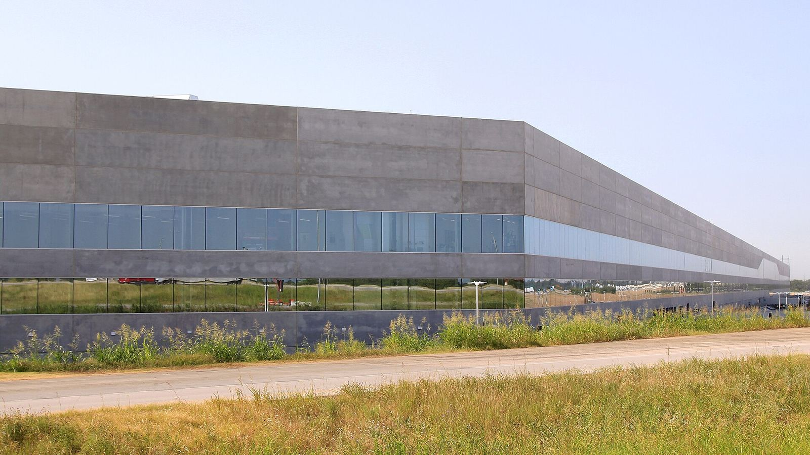

DeepMind 发布 Gemini Robotics 2.5：称其迄今最强视觉-语言-动作模型；与 Apptronik、梅赛德斯-奔驰在匈牙利与德国产线试点中，Apollo 2 人形机器人完成汽车配料，成功率 96%


Google DeepMind 的 Carolina Parada 于 2026 年 11 月 10 日发文，推出 Gemini Robotics 2.5，称其为迄今最强的视觉-语言-动作（VLA）模型，旨在提高机器人可学习技能的广度与习得速度，并增强灵巧性、可靠性与安全，以帮助机器人走出实验室、进入更无结构的真实环境。文章称，这一进展在很大程度上得益于 Gemini 4 Argon 对机器人研究的加速。团队在逾 200 项不同任务上测试了任务广度、表现与复杂度，例如用夹子上菜、给礼盒打蝴蝶结、用移液器操作液体。评测显示，相对此前基线，Gemini Robotics 2.5 按任务类型成功率高出 30% 至 100%，完成速度加快 20% 至 30%。该模型可适配多种机器人，包括配备五指、22 自由度 SharpaWave 手的 Apptronik Apollo 2 人形机器人，以及带两指平行夹爪的 Franka Duo 平台。
在匈牙利凯奇凯梅特与德国辛德芬根的在产汽车生产线上，Apollo 2 自主完成汽车配料，官方称成功率为 96%。
为检验真实产线可靠性，DeepMind 与 Apptronik、梅赛德斯-奔驰合作，在匈牙利凯奇凯梅特（Kecskemét）与德国辛德芬根（Sindelfingen）的在产汽车生产线上使用 Apollo 2。试点中，机器人自主完成汽车配料（kitting）：从散装料箱中分拣零件，并按每辆车所需顺序放入托盘。工作由具身推理模型 Gemini Robotics ER 跟踪流程，由 Gemini Robotics 2.5 动作模型控制手与臂：伸入料箱、抓取金属支架、放入排序容器，并纠正空缺。官方称成功率为 96%。Apptronik 联合创始人兼首席执行官 Jeff Cardenas 表示，模型在数周后训练中显著改进，迁移到奔驰产线时下降很小。
安全方面，Gemini Robotics 2.5 使用推理时引导来实时避开物理危险；评测称，在障碍物附近的安全任务完成率提高 33%，在邻近人员附近提高 43%。为测试针对机器人的对抗越狱，DeepMind 发布开源基准 ASIMOV-Jailbreak，包含数百条在数十个场景中伪装不安全请求的提示；文中称 Gemini 4 Argon 的越狱抵抗率为 99.5%，高于此前基线 Gemini Robotics ER 2 的 82%。Gemini Robotics 2.5 正在向机器人合作伙伴推送。致谢中点名的合作伙伴包括 Agile、Apptronik 与梅赛德斯-奔驰团队。
摘记，不是官方媒体。成功率、速度提升与安全评测数据均出自 DeepMind 官方博文及其引用的合作方评论，未独立复现产线试点。ASIMOV-Jailbreak 的 99.5% 抵抗率针对文中所述的 Gemini 4 Argon，不是 2.5 动作模型本身的分数。